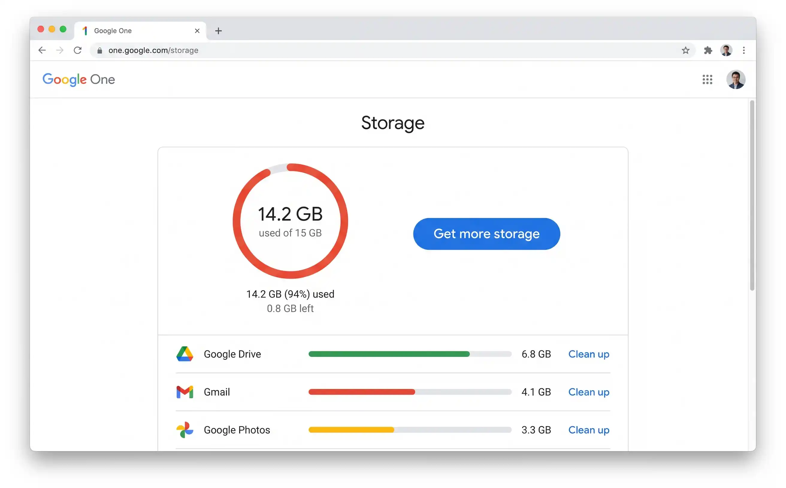
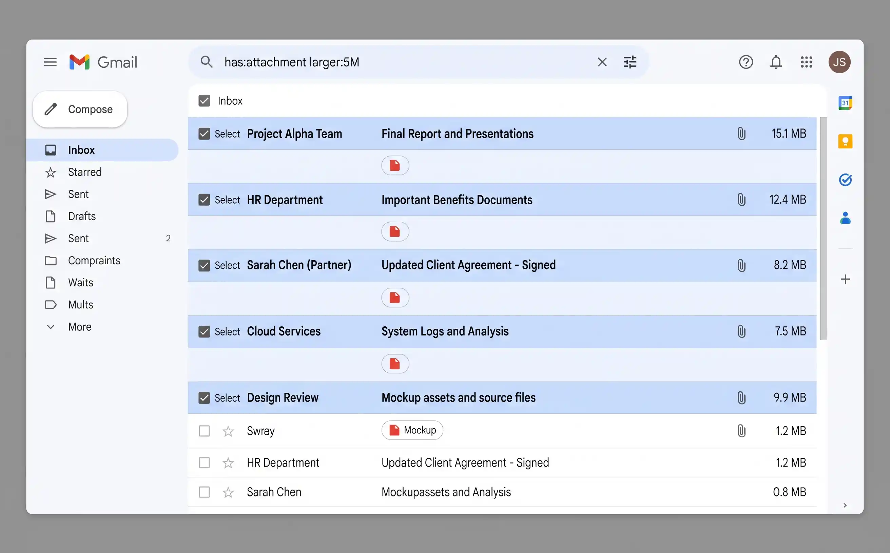
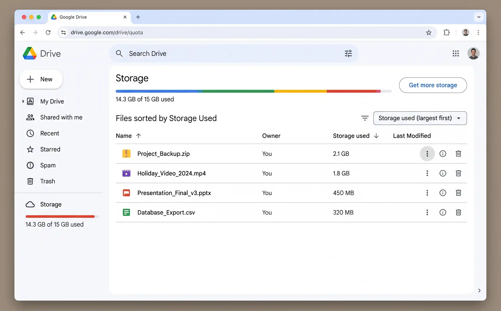
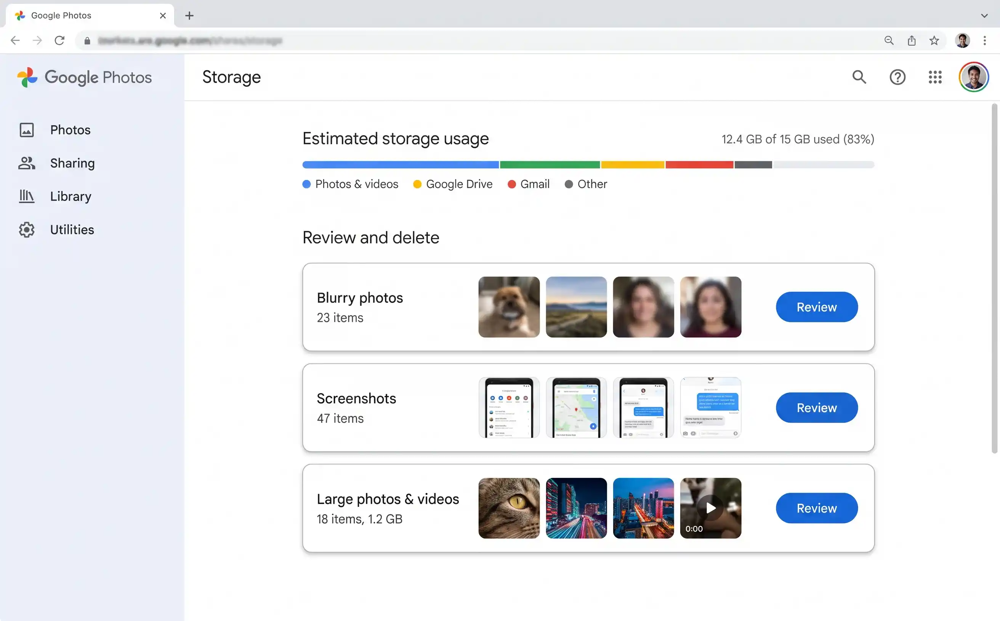

Why your Google storage fills up
Every Google account comes with 15 GB of free storage — but most people don't realise that Gmail, Google Drive and Google Photos all share that single 15 GB pool. It isn't 15 GB each; it's 15 GB total. That changes the maths dramatically.
A busy Gmail account with years of attachments can easily consume 5–8 GB on its own — start with cleaning up your Gmail inbox, since it's usually the biggest space hog of the three. Google Drive accumulates old presentations, PDF scans, shared files and forgotten backups. And since June 2021, every photo and video uploaded to Google Photos in "Original quality" counts against the quota too — even if you uploaded them years earlier in what used to be free "High quality."
There are a few less obvious things that also eat into your 15 GB:
- Drive Bin items — deleted files sit in the Bin for 30 days and still count against your quota the entire time.
- Gmail Bin and Spam — same rule. Deleted emails and spam count until they're permanently removed (up to 30 days).
- Orphaned app data — some third-party apps store hidden data in your Drive. You can't see these files normally, but they still use space.
- Old Google Forms responses — if you've ever created a Google Form, the linked spreadsheet of responses lives in your Drive.
Google Docs, Sheets and Slides created in Google's own formats use zero storage. Only uploaded files (PDFs, Word documents, images, videos) and files converted to non-Google formats count. So your 200-page Google Doc is free, but the 50 MB PDF you uploaded alongside it isn't.
Check what's using your 15 GB
Before cleaning anything, find out where your storage is actually going. Google makes this easy with a single dashboard — visit one.google.com/storage to check your current quota, or see Google's official storage guide for more detail.
-
1
Visit one.google.com/storage
Sign in if prompted. You'll see a colour-coded breakdown showing exactly how much Gmail, Drive and Photos are each consuming. This tells you where to focus your cleanup effort.
-
2
Note which service is the biggest culprit
For most people, Gmail is the largest — often 40–50% of total usage. If your bar shows Drive or Photos dominating, skip ahead to that section first.

The Google One storage page shows your usage at a glance. Click any service to start cleaning it directly.
Clean up Gmail (usually the biggest culprit)
Gmail is deceptive. Individual emails are small, but attachments — particularly photos, PDFs and spreadsheets people have sent you over the years — add up relentlessly. A single email thread with a 25 MB attachment is using the same space as 5,000 plain-text emails. The good news: Gmail's search operators make it remarkably easy to find and delete the worst offenders. For a full walkthrough of inbox-specific techniques, see our Gmail inbox clean-up guide.
Find and delete large attachments
-
1
Search for
has:attachment larger:10MThis surfaces every email with an attachment larger than 10 MB. You'll typically find old file transfers, photo batches from family, and documents people emailed instead of sharing via Drive.
-
2
Select all → Delete
Tick the select-all checkbox at the top. If there are more results than fit on the page, Gmail will show a banner saying "Select all conversations that match this search" — click it to catch everything. Then hit the delete button.
-
3
Repeat with
has:attachment larger:5MCast a wider net. Emails between 5–10 MB don't feel large individually, but hundreds of them compound into gigabytes.
If an attachment is something you still need (a contract, a receipt, an important document), download it to your computer or save it to Google Drive first. Once you delete the email, the attachment is gone too.
Delete old promotional emails in bulk
Promotional emails are the silent storage killer. Years of marketing newsletters, sale alerts and service notifications pile up unnoticed. Gmail categorises these automatically, making bulk deletion trivial.
-
1
Search for
category:promotions older_than:1yThis finds every promotional email older than one year. You almost certainly don't need last year's Black Friday alerts.
-
2
Select all matching conversations and delete
Click the select-all checkbox, then "Select all conversations that match this search," then delete. This single action can free hundreds of megabytes.
Empty the Gmail Bin
This is the step most people forget. Deleted emails move to the Bin and continue counting against your quota for up to 30 days. To reclaim the space immediately:
-
1
Go to Gmail → Bin (in the left sidebar, you may need to click "More")
You'll see all recently deleted emails still taking up space.
-
2
Click "Empty Bin now"
This permanently deletes everything in the Bin and immediately frees the storage. This action cannot be undone.
Once you empty the Bin, those emails are gone forever — Google cannot recover them. If you're unsure about anything you just deleted, check the Bin before emptying it. You can restore individual emails by opening them and clicking "Move to Inbox."

Searching for has:attachment larger:5M surfaces the emails consuming the most storage. Select all and delete to reclaim space instantly.
Useful Gmail search operators for cleanup
| Search operator | What it finds | Example |
|---|---|---|
has:attachment |
All emails with any attachment | has:attachment |
larger: |
Emails larger than a specified size | larger:10M |
older_than: |
Emails older than a time period | older_than:2y |
category: |
Emails in a Gmail category tab | category:promotions |
in:trash |
Emails currently in the Bin | in:trash |
in:spam |
Emails in the Spam folder | in:spam |
filename: |
Emails with a specific file type attached | filename:zip or filename:mp4 |
You can chain these together. For example, has:attachment larger:5M older_than:2y finds large attachments from emails more than two years old — almost always safe to delete. Or category:social older_than:6m targets old social media notification emails.
Clean up Google Drive
Google Drive is where forgotten files go to quietly consume your quota. Old backups, duplicate uploads, large video files you shared once two years ago — they all sit there indefinitely unless you actively remove them.
Find your largest files
-
1
Go to drive.google.com/drive/quota
This hidden page shows every file in your Drive sorted by size — largest first. It's the fastest way to identify what's eating your storage.
-
2
Review the top 20–30 files
Look for old ZIP archives, video recordings, disk images, large PDFs, and backup files. These are almost always safe to delete if they're more than a few months old.
-
3
Right-click → Move to bin
Select the files you no longer need and move them to the bin. Remember to empty the bin afterwards (next step).
Check "Shared with me" files
A common misconception: files shared with you don't count against your quota unless you add them to your own Drive. If you've ever clicked "Add shortcut to Drive" or "Make a copy" on someone else's shared file, that copy sits in your quota. Check your Drive for copies of shared documents you no longer need.
Empty the Drive Bin
Just like Gmail, deleted Drive files linger in the Bin for 30 days, still counting against your storage. Go to drive.google.com → Bin (in the left sidebar) and click "Empty bin" to reclaim the space immediately.

The Drive quota page (drive.google.com/drive/quota) sorts every file by size. The top 10 files often account for half your Drive usage.
Some third-party apps (WhatsApp backups, game saves, old phone backups) store data in a hidden Drive folder. To check: go to drive.google.com → Settings (cog icon) → Manage Apps. You can see how much data each app is using and delete it if the app is no longer relevant.
Clean up Google Photos
Google Photos is often the sneakiest storage consumer. Before June 2021, "High quality" photos uploaded for free didn't count against your quota. Since then, every new photo and video counts — and if you have years of uploads, they compound quickly.
Use the built-in storage management tool
-
1
Go to photos.google.com/quotamanagement
Google's storage management tool automatically identifies blurry photos, screenshots, large videos and other items you might want to delete. It groups them into categories for easy review.
-
2
Review "Blurry photos" and "Screenshots"
These are almost always safe to delete. Google identifies them with decent accuracy — but skim through before hitting delete, just in case it's flagged something you want to keep.
-
3
Review "Large photos and videos"
Videos are the real storage hogs. A single 4K video can be 500 MB or more. If you've already backed it up elsewhere or don't need it, deleting a handful of large videos can free gigabytes.
Switch to "Storage saver" quality
If you don't need full-resolution originals stored in Google Photos, switching to Storage saver (previously called "High quality") compresses photos and videos slightly. Photos are reduced to 16 MP and videos to 1080p — the visual difference is negligible for all but professional photographers.
-
1
Go to photos.google.com/settings
Under "Upload size," select Storage saver instead of "Original quality."
-
2
Optionally, compress existing photos
On the same settings page, you may see an option to "Recover storage" — this converts your existing original-quality photos to storage-saver quality. It can reclaim 20–40% of your Photos storage, but the compression is irreversible.
Once you compress existing photos from Original to Storage saver quality, you cannot undo it. If you need full-resolution originals for printing or professional work, download them to your computer first. For everyday photos, the quality difference is imperceptible.

Google Photos' quota management tool at photos.google.com/quotamanagement groups deletable items into easy categories — blurry shots, screenshots and large videos.
The nuclear option: Google One storage plans
If you've done everything above and 15 GB still isn't enough — or if you simply don't want to spend time managing storage — Google One plans let you buy more space. The storage is shared across Gmail, Drive and Photos (and across up to five family members on the higher tiers).
| Plan | Storage | Monthly price | Best for |
|---|---|---|---|
| Free | 15 GB | £0 | Light users who keep on top of cleanup |
| Basic | 100 GB | £1.49 | Most people — comfortable headroom for years |
| Standard | 200 GB | £2.49 | Families or heavy photo/video users |
| Premium | 2 TB | £7.99 | Power users, photographers, full device backups |
Most people can free 3–8 GB with 15 minutes of cleanup using the methods in this guide. That's often enough to postpone or avoid a paid plan entirely. Only upgrade if you genuinely need the space after cleaning up.
Quick wins — ranked by effort vs. reward
| Action | Time needed | Typical storage saved | Difficulty |
|---|---|---|---|
| Empty Gmail Bin | 1 min | 500 MB – 2 GB | Easy |
Delete Gmail large attachments (has:attachment larger:5M) | 5 min | 1 – 4 GB | Easy |
| Empty Drive Bin | 1 min | varies | Easy |
| Delete Drive large files (via quota page) | 5 min | 1 – 5 GB | Easy |
Delete old promotional emails (category:promotions older_than:1y) | 3 min | 500 MB – 2 GB | Easy |
| Review Google Photos blurry/screenshots | 5 min | 200 MB – 1 GB | Easy |
| Switch Photos to Storage saver + recover storage | 2 min | 20–40% reduction | Easy |
Keeping Google storage clear
A one-time cleanup buys you breathing room, but without good habits the storage will fill up again within a year. These four practices keep your 15 GB (or your paid plan) healthy permanently:
- Monthly storage check. Bookmark one.google.com/storage and glance at it on the first of each month. If any service is creeping upward, spend five minutes clearing the obvious items. Prevention is always easier than a crisis cleanup.
- Unsubscribe from email newsletters you don't read. Every marketing email with a banner image is 100–500 KB. Over a year, a single newsletter you never open can consume 50–200 MB. Unsubscribe ruthlessly — if you haven't opened a newsletter in three months, you won't miss it.
- Don't use Gmail as file storage. If someone emails you an important document, save it to Google Drive (or your computer) and then delete the email. Keeping the email "just in case" means the attachment lives in your quota forever.
- Use Storage saver in Google Photos by default. Unless you're a professional photographer who needs full-resolution originals in the cloud, Storage saver quality is visually identical and uses significantly less space. Set it once and forget it.
First of the month: check one.google.com/storage (1 min), search Gmail for has:attachment larger:10M and delete anything stale (2 min), empty Gmail and Drive Bins (1 min), review Google Photos suggestions (2 min). Under six minutes to keep your Google account running smoothly all month.